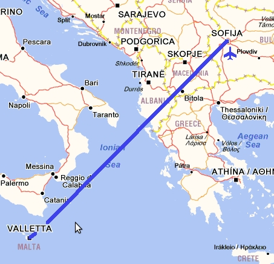

За това пътуване
Самолет: 2940 km
Кораб: 10 km
Общa Статистика
Самолет: 29415 km
Автомобил: 26819 km
Влак: 3972 km
Кораб: 928 km
Общо: 61134 km
Градове: 52
Държави: 20
Континенти: 2
Меден месец Малта
От сватбата най – много ми хареса... булката, а след това медения месец. Избрахме Малта, като една от най – южните точки на Европа, предвид на това че беше месец май и искахме да ходим на плаж. Потеглихме буквално часове след голямото събитие – още на следващият ден в осем часа сутринта.

Полет София - Малта
С полет на Air Malta се озовахме в Ла Валета. Посрещнаха ни типичните за острова автобуси и малтийските лири. Стоварихме се на ферибот терминала за Гозо и зачакахме „нашата“ лодка. Хотелът ни беше единственият на малкото островче Комино и съответно транспортираха гостите с лодка по разписание от Малта и Гозо. Вълнуващо а? Качихме се на борда и след около половин час вече бяхме на нашето островче. Настанихме се в стаята и веднага ни грабна страхотната гледка към морето.
Спокойствието беше навсякъде. Острова има само 4-ма жители, които вероятно съставляваха персонала на хотела. Има много птици, но и доста змии. За първи път видях как змия ловува птица, беше се изправила на половин метър над земята опитвайки се да захапе пернатото.
Уникалното място на Комино е Синята лагуна, там ходихме на плаж. Вижте галерията и се убедете сами.

Виж Галерията от Комино
Не се напъвахме много да обикаляме, но все пак посетихме остров Гозо. Отново нашето любимо корабче – връзката ни с цивилизацията, ни закара до там. Разгледахме цитаделата на хълма по средата на острова а после отидохме до Лазурният прозорец – издълбан в скалите. Чакайки лодката за обратния курс направихме страхотни снимки от хълма над пристанището.
Виж Галерията от Гозо
Оставихме разходката в Ла Валета за последния ден. Градът ми се стори като една огромна крепост. Всичко е от камък – улици, тротоари, къщи. Само железните оръдия и пристанищни кранове разнообразяват пейзажа.
Виж Галерията от Ла Валета